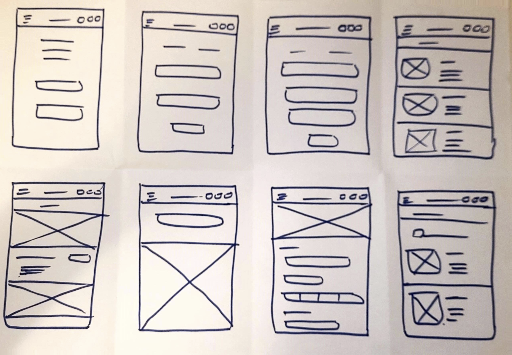

Mid-fidelity Wireframes
My Role
UI/UX designer
Duration
2 months
Tools
Figma, Miro, Canva
Design Team
3 Members
My Contributions
As a UX Designer in the Techlabs UX Design Program, I collaborated with a multidisciplinary team of designers, developers, and data scientists to create this project. From initial research to final UI designs, I played a key role in every stage of the design process. Through testing and iteration, we successfully developed a user-friendly and effective product.
My Deliverables
Competitive Analysis
User Research
User Personas & Journey Map
User Flows
Wireframing
Style guide
Prototyping
User Testing
Understanding the Problem
Competitive Research
I analyzed competitors like Kleinanzeigen, Facebook Marketplace, and, Free Your Stuff assessing their goals, advantages, strategies, and marketing tactics. Additionally, I conducted SWOT Analysis for deeper insights.
Problem Statement:
Berlin's streets hide a wealth of useful objects, but accessing them requires being in the right place at the right time. Unfortunately, this means those who could benefit from these items are often unaware of their existence. As a result, the city grapples with an increasing accumulation of waste in its streets.
Possible Solution
A Progressive Web App (PWA) that connects people who want to give away their unwanted items with those who need them. It features a map view of donated items, a post-item screen, and the ability to mark items as unavailable once they are taken. This app aims to reduce waste and promote sustainability in Berlin.
Design Process
Empathize
User Interviews
I have conducted in-depth 5 qualitative interviews with environmentally conscious individuals and those passionate about reusing and recycling. These interviews provided valuable insights into the challenges of leaving and picking up free items from the streets.
Some of the main insights were:
"The process of others coming to pick up items is difficult."
"I don't like to answer a lot of queries about the item I'm giving away."
"Sometimes the person scheduled to pick up the item doesn't show up."
"Safety is a concern, especially regarding the pickup place and the item itself."
Affinity Mapping
After conducting interviews, I organized the findings into an affinity diagram. By examining these insights, I gained a deeper understanding of the user's perspective, which helped the design process.
Define
User Personas
Developed a user persona based on research findings, allowing me to understand user challenges and opportunities better. They guided me as a constant reminder of my prospective users and played a crucial role in keeping their needs and preferences at the forefront of my design process.
User Journey
User journey mapping allowed me to analyze the current user experience and identify opportunities for improvement. By addressing pain points and eliminating unnecessary steps, i enhanced the overall experience, leading to higher satisfaction and conversion rates.
User flow
With a deep understanding of our user personas, I meticulously designed user flows that illuminate every step of their journey. These carefully crafted flows capture the user's actions and ensure seamless completion of tasks, enhancing the overall user experience.

Sitemap
I developed a clear and organized site map to ensure easy navigation and improve the overall user experience. The site map helped me to structure the app and prioritize the most important features and pages.
Ideate
Sketches
The user flow and site maps were then observed in detail and then I sketch out the screens on paper and express some ideas about how navigation and interface stages would work for a user.

Wireframes
After translating my design concepts into sketches, I transformed them into mid-fidelity wireframes to visualize the functionality of the app. I then created high-fidelity wireframes that showcased the final visual design and interactive elements of the app.
High-fidelity Wireframes
Usability Testing
As the Geofree design started solidifying and the high-fidelity prototype was ready, initiating usability testing was the right moment. The objective was to ensure that users could accomplish specified tasks and measure the time taken to complete these tasks.I conducted the usability test with six participants, reflecting user personas, using a moderated remote approach.
Below are tasks given to users during the usability test:
- Search for a specific item (e.g., "Children's toys") in your locality.
- Post an item on Geofree, including filling out the item's details and location.
- Locate an item you've posted and try to edit the details.
6
participants
24-36
Age range
3
Tasks
20
Mins each
Test Results
During the usability testing of Geofree, several key findings and insights were gathered from the participants' experiences. Here are the highlights of the test results
Refining the Design
By summarizing the test results, I have identified the major issues that need to be addressed to optimize the platform.
Issue 1
Participants have expressed an interest in seeing other
similar items.
Suggested change:
I have added other interesting options to provide users
with additional choices and potential alternatives.
Issue 2
Participants have expressed a desire to see the available
items in a map view.
Suggested change:
Implemented a map view feature that allows users to
easily browse and locate items in their vicinity.

Issue 3
Participants have suggested the inclusion of a status
indicator on each item.
Suggested change:
I added a status indicator for each item to indicate
its availability or if it has already been taken. This
addition provides users with quick visibility into the status
of items without the need to click on each one individually.
Style Guide
Final Design
Prototype
Give Away Item
Summary
Working on Geofree was a transformative experience that enhanced my UX design and research skills. Through research and insightful interviews, I gained a solid understanding of user needs. Iterative design and user feedback played a crucial role in refining the app. Leveraging tools like Figma and collaborating effectively within a team, I created user-centered solutions.